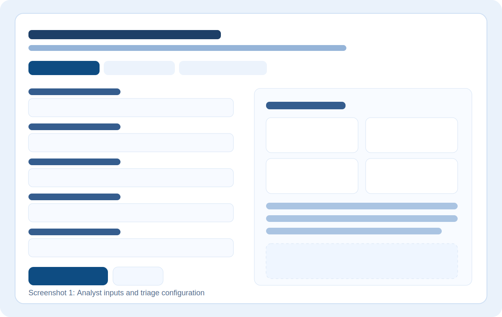
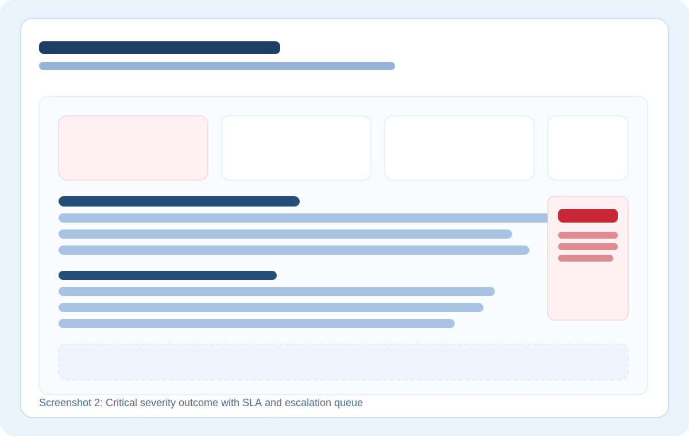
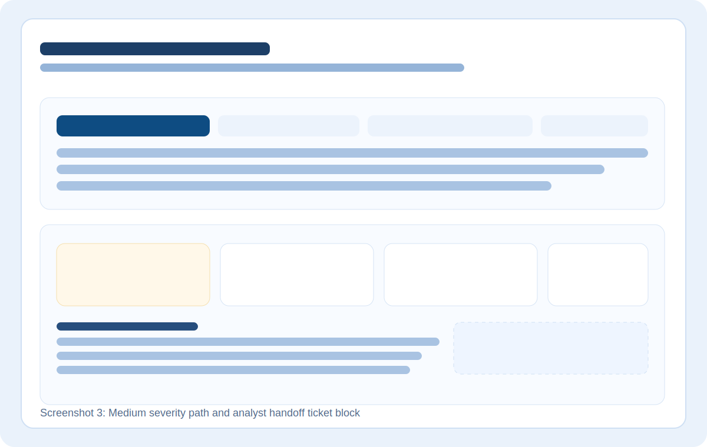

Security Operations Project
Incident Response Priority Calculator
A SOC triage simulator that translates incident indicators into an objective risk score, priority band,
response SLA, and escalation queue.
The goal is consistency under pressure: analysts can make clear decisions faster while keeping investigation notes structured.

Project Screenshots
Product-style screenshots showing the input workflow, critical incident output, and medium-severity analyst handoff.

Input workflow for alert classification and context capture.

Critical outcome with response SLA and SOC escalation queue.

Medium path with recommended actions and ticket-ready summary.
Case Study
Problem: Alert queues can become inconsistent when analysts prioritize based on intuition alone.
Approach: I designed a weighted triage model that combines threat type, business impact, data sensitivity, scope, confidence, and control gaps.
Result: The workflow outputs repeatable priority decisions, targeted response actions, and a ticket-style handoff format.
Stack
- Semantic HTML
- Custom CSS (responsive)
- Vanilla JavaScript decision logic
- Accessible form + live region updates
Live Demo
Use a preset, tune a few values, and generate a triage outcome.